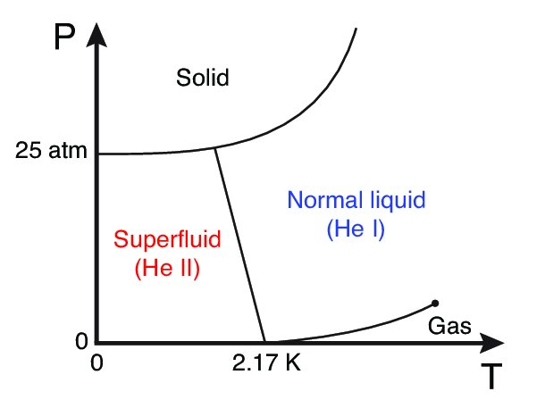

Approximation of the λ Point and Thermodynamic Properties of Superfluid 4He
Put a bottle of water in the freezer and you know how the story ends: it gets cold, turns hard and that is it — ordinary ice. Helium, by contrast, seems like the guest who refuses to follow the script. Cool it almost to absolute zero and it stays liquid. More than that: below a temperature close to 2.17 kelvin, it begins to slide around as a superfluid, with almost none of the braking that any liquid feels when it rubs against the walls.Si metes una botella de agua al congelador, sabes cómo termina la historia: se enfría, se endurece y listo: hielo de toda la vida. El helio, en cambio, parece el invitado que se niega a seguir el guion. Lo enfrías casi hasta el cero absoluto y sigue líquido. Más todavía: al enfriarlo por debajo de una temperatura cercana a 2,17 kelvin, empieza a deslizarse como un superfluido, casi sin el frenazo que cualquier líquido siente al rozar las paredes.Stell eine Flasche Wasser ins Gefrierfach, und du kennst das Ende: Sie wird kalt, fest, und das war's — gewöhnliches Eis. Helium wirkt dagegen wie der Gast, der sich weigert, nach dem Drehbuch zu spielen. Man kühlt es fast bis zum absoluten Nullpunkt ab, und es bleibt flüssig. Mehr noch: Unterhalb einer Temperatur nahe 2,17 Kelvin beginnt es als Superfluid dahinzugleiten, fast ohne die Bremswirkung, die jede Flüssigkeit beim Reiben an den Wänden spürt.把一瓶水放进冰箱冷冻室，你知道故事会怎样结束：它变冷、变硬，然后就这样了——普通的冰。氦却像一个拒绝按剧本演出的客人。把它冷却到几乎绝对零度，它仍然保持液态。更奇怪的是：低于接近 2.17 开尔文的温度后，它会像超流体一样滑动，几乎没有液体摩擦容器壁时通常会受到的阻力。
To picture what happens, imagine a crowded party. One group crosses the room bumping into everyone: it gets stuck, slows down and drags the movement of the crowd along with it. Another group glides as if it had its own dance floor. Everyone is in the same room, but they are not moving by the same rules. That is the key idea: two ways of moving can coexist in the same helium. “Two fluids” is simply the name physicists gave to that double life.Para imaginar lo que pasa, piensa en una fiesta llena de gente. Un grupo cruza la sala chocando con todo el mundo: se atasca, se frena y arrastra consigo el movimiento de la multitud. Otro grupo se desliza como si tuviera una pista de baile propia. Todos están en la misma sala, pero no se mueven con las mismas reglas. Esa es la idea clave: dos maneras de moverse pueden coexistir en el mismo helio. “Dos fluidos” es simplemente el nombre que los físicos le pusieron a esa doble vida.Um dir das vorzustellen, denk an eine überfüllte Party. Eine Gruppe läuft durch den Raum und stößt überall an: Sie bleibt hängen, wird langsamer und nimmt die Bewegung der Menge mit. Eine andere gleitet, als hätte sie ihre eigene Tanzfläche. Alle sind im selben Raum, aber sie bewegen sich nicht nach denselben Regeln. Das ist die zentrale Idee: Zwei Bewegungsarten können im selben Helium koexistieren. „Zwei Flüssigkeiten“ nennen Physiker dieses Doppelleben.为了想象这个过程，可以把它看成一场拥挤的聚会。一群人穿过房间时不断撞到别人：会卡住、减速，还会带动人群一起移动。另一群人却像拥有自己的舞池一样顺滑地滑过去。大家都在同一个房间里，却不遵守同样的规则。关键就在这里：同一氦液中可以共存两种运动方式。“两流体”只是物理学家给这种双重生活取的名字。
Helium behaves this way because of some rather particular quantum rules. Its atoms are bosons. Put simply, they can share the same quantum configuration, like passengers sharing a seat without fighting over it. At such low temperatures, many atoms stop acting like separate little balls and start moving as if they were listening to the same music.El helio se comporta así por unas reglas cuánticas bastante particulares. Sus átomos son bosones. Dicho sin ponerse solemne: pueden compartir la misma configuración cuántica, como pasajeros que comparten una butaca sin pelearse por ella. A temperaturas tan bajas, muchos átomos dejan de actuar como bolitas separadas y empiezan a moverse como si escucharan la misma música.Helium verhält sich wegen einiger ziemlich besonderer Quantenregeln so. Seine Atome sind Bosonen. Einfach gesagt können sie dieselbe quantenmechanische Konfiguration teilen, wie Fahrgäste, die sich einen Sitz teilen, ohne darum zu streiten. Bei so tiefen Temperaturen hören viele Atome auf, wie getrennte kleine Kugeln zu handeln, und beginnen sich zu bewegen, als hörten sie dieselbe Musik.氦之所以如此，是因为一些相当特别的量子规则。它的原子是玻色子。简单地说，它们可以共享同一种量子状态，就像乘客共享一个座位而不为此争吵。在如此低的温度下，许多原子不再像彼此分开的“小球”，而开始像听着同一首音乐那样一起运动。
Why does helium refuse to freeze? Because, at that scale, the floor of the party never becomes completely still. Even if you turn off the music and ask everyone to stand perfectly still, a small quantum tremor remains. That motion keeps the atoms from locking together into a rigid solid. The liquid keeps room to move.¿Por qué el helio se niega a congelarse? Porque, a esa escala, el piso de la fiesta nunca se queda del todo quieto. Aunque apagues la música y les pidas a todos quedarse inmóviles, queda un pequeño temblor cuántico de fondo. Ese movimiento impide que los átomos se amarren y formen un sólido rígido. El líquido conserva espacio para moverse.Warum weigert sich Helium zu gefrieren? Weil der Boden der Party auf dieser Skala nie ganz stillsteht. Selbst wenn du die Musik ausschaltest und alle bittest, vollkommen stillzustehen, bleibt ein kleines Quantenzittern. Diese Bewegung hindert die Atome daran, sich zu einem starren Festkörper zu verriegeln. Die Flüssigkeit behält ihren Bewegungsspielraum.为什么氦不肯冻结？因为在那个尺度上，聚会的地板从来不会完全静止。即使关掉音乐、要求所有人一动不动，背景中仍会留下细微的量子颤动。这种运动阻止原子彼此锁定、形成坚硬的固体。液体仍然保留着移动的空间。
As the temperature drops, the ordinary jostling quiets down. The smooth group gains ground until the party crosses a special boundary. That boundary is the lambda point: a door between normal helium and superfluid helium. No wall appears inside the bottle; the same crowd simply begins to behave differently.A medida que baja la temperatura, el ajetreo normal se calma. El grupo que se mueve suavemente gana terreno, hasta que la fiesta cruza una frontera especial. Esa frontera se llama punto lambda: una puerta entre el helio normal y el superfluido. Dentro de la botella no aparece ninguna pared; la misma multitud empieza a comportarse de otra manera.Wenn die Temperatur sinkt, beruhigt sich das gewöhnliche Gedränge. Die gleitende Gruppe gewinnt an Raum, bis die Party eine besondere Grenze überschreitet. Diese Grenze ist der Lambda-Punkt: eine Tür zwischen normalem und superfluidem Helium. Im Inneren der Flasche erscheint keine Wand; dieselbe Menge beginnt einfach, sich anders zu verhalten.随着温度下降，普通的推挤逐渐安静下来。顺滑移动的那群人不断扩大优势，直到聚会越过一道特殊边界。这道边界就是λ点：普通氦与超流氦之间的一扇门。瓶子里不会出现一堵墙；同一群人只是开始以不同方式行动。

Now look at the party from above. Sometimes a wave moves, not a particular person: one person nudges the next and the nudge travels through the room. Sometimes a whirlpool forms in one spot. In physics, these two kinds of movement have names — phonons and rotons. But the picture matters more than the vocabulary.Ahora mira la fiesta desde arriba. A veces se mueve una ola, no una persona: alguien empuja al siguiente y el empujón recorre la sala. Otras veces se forma un remolino en un solo lugar. En física, a estas dos formas de movimiento les pusieron nombres: fonones y rotones. Pero la imagen importa más que el vocabulario.Schau nun von oben auf die Party. Manchmal bewegt sich eine Welle, nicht eine bestimmte Person: Einer stupst den Nächsten an, und der Stoß läuft durch den Raum. Manchmal bildet sich an einer Stelle ein Wirbel. In der Physik haben diese beiden Bewegungsarten Namen — Phononen und Rotonen. Aber das Bild ist wichtiger als das Vokabular.现在从上方看这场聚会。有时移动的是一道波，而不是某个特定的人：一个人推向下一个人，推力就这样穿过房间。有时运动则像在某个地方形成了漩涡。在物理学中，这两种运动叫作声子与旋子。但图像比术语更重要。
The nice part is that we do not need to follow every guest. We only need to estimate how much of each kind of movement is present as the party gets colder: the bumping group becomes smaller and the gliding group takes over. That change shows up in the way the liquid responds to heat.La gracia es que no necesitamos seguir a cada invitado. Basta con estimar cuánto hay de cada movimiento mientras la fiesta se enfría: el grupo que choca se achica y el que se desliza toma el control. Ese cambio se nota en la forma en que el líquido responde al calor.Das Schöne daran ist, dass wir nicht jeden Gast verfolgen müssen. Es reicht abzuschätzen, wie viel von jeder Bewegungsart vorhanden ist, während die Party kälter wird: Die stoßende Gruppe wird kleiner, die gleitende übernimmt. Dieser Wandel zeigt sich darin, wie die Flüssigkeit auf Wärme reagiert.好处在于，我们不需要逐个跟踪每位客人。只要估计聚会变冷时两种运动各占多少就够了：不断碰撞的那群人越来越小，顺滑移动的那群人逐渐接管一切。这种变化会体现在液体对热量的响应方式中。
And that is the interesting part: the example matters beyond helium. A liquid can have different “personalities”, and cooling it can change which one takes charge. For quantum thermal machines, the lesson is useful: heat is not only about how much energy is present, but also about how the hidden motions inside reorganize.Y ahí está lo interesante: el ejemplo importa más allá del helio. Un líquido puede tener distintas “personalidades”, y enfriarlo puede cambiar cuál toma el mando. Para los motores térmicos cuánticos, esto deja una idea importante: el calor no depende solo de cuánta energía hay, sino también de cómo se reordenan los movimientos que ocurren por dentro.Und darin liegt der interessante Punkt: Das Beispiel geht über Helium hinaus. Eine Flüssigkeit kann verschiedene „Persönlichkeiten“ haben, und Abkühlung kann verändern, welche davon das Sagen hat. Für Quantenwärmekraftmaschinen ist die Lehre nützlich: Wärme hängt nicht nur davon ab, wie viel Energie vorhanden ist, sondern auch davon, wie sich die verborgenen Bewegungen im Inneren neu ordnen.有趣之处也正在这里：这个例子不只与氦有关。同一种液体可以有不同的“性格”，而冷却会改变哪一种性格占上风。对于量子热机，启示是：热量不只取决于系统中有多少能量，也取决于内部隐藏的运动如何重新组织。
If you want to see what is behind the trick, swipe to the Specialist version.Si quieres ver qué hay detrás del truco, desliza hacia la versión Especialista.Wenn du sehen willst, was hinter dem Trick steckt, wische zur Version Fachlich.如果你想看看这个“把戏”背后的内容，可以滑到专业版。
Superfluidity in helium-4 is experimentally well established. The narrower thermodynamic question is how far Landau's phenomenological model can reproduce the transition temperature by combining conventional thermodynamics with a description of the excitations that form the normal component.La superfluidez del helio-4 está bien establecida experimentalmente. La pregunta es más acotada: ¿hasta dónde puede reproducir el modelo fenomenológico de Landau la temperatura de transición combinando termodinámica convencional con la descripción de las excitaciones que forman la componente normal?Die Superfluidität von Helium-4 ist experimentell gut etabliert. Die engere thermodynamische Frage lautet: Wie weit kann Landaus phänomenologisches Modell die Übergangstemperatur reproduzieren, wenn man konventionelle Thermodynamik mit einer Beschreibung der Anregungen der normalen Komponente verbindet?氦-4的超流性已经有充分的实验确证。这里更具体的热力学问题是：将通常的热力学与普通组分激发的描述结合起来后，朗道唯象模型能够在多大程度上重现转变温度？
The starting point is the two-fluid decomposition, ρ = ρn + ρs, where ρn and ρs are the normal and superfluid densities. The first is associated with momentum carried by thermal excitations; the second is the collective component that can flow without dissipation in the ideal regime. These are not two separate substances or two phases divided by an interface, but two hydrodynamic components of the same quantum liquid. The momentum density is P = ρnvn + ρsvs, so each component can carry momentum with its own velocity.El punto de partida es la descomposición de dos fluidos, ρ = ρn + ρs, donde ρn y ρs son las densidades normal y superfluida. La primera corresponde al momento transportado por las excitaciones térmicas; la segunda, al componente colectivo que puede fluir sin disipación en el régimen ideal. No se trata de dos sustancias separadas ni de dos fases con una interfaz dentro del recipiente, sino de dos componentes hidrodinámicas del mismo líquido cuántico. La densidad de momento se escribe como P = ρnvn + ρsvs, de modo que cada componente puede transportar momento con una velocidad propia.Ausgangspunkt ist die Zwei-Flüssigkeiten-Zerlegung ρ = ρn + ρs, wobei ρn und ρs die Dichten der normalen bzw. superfluiden Komponente sind. Die erste ist mit dem von thermischen Anregungen getragenen Impuls verbunden; die zweite ist die kollektive Komponente, die im idealisierten Regime ohne Dissipation fließen kann. Es handelt sich nicht um zwei getrennte Stoffe oder zwei durch eine Grenzfläche geteilte Phasen, sondern um zwei hydrodynamische Komponenten derselben Quantenflüssigkeit. Die Impulsdichte lautet P = ρnvn + ρsvs, sodass jede Komponente Impuls mit ihrer eigenen Geschwindigkeit tragen kann.起点是两流体分解 ρ = ρn + ρs，其中 ρn 与 ρs 分别是普通组分与超流组分的密度。前者对应由热激发携带的动量；后者是理想情况下能够无耗散流动的集体组分。它们不是两种分开的物质，也不是由界面分隔的两个相，而是同一量子液体的两个流体力学组分。动量密度写成 P = ρnvn + ρsvs，因此两个组分可以用各自的速度携带动量。
The normal component is built from Landau's excitation spectrum. For phonons, the linear branch εp = cp is used; it is the low-energy approximation for sound waves in the liquid. For rotons, a parabolic expansion around the minimum is adopted, εr = Δ + (p − p0)²/(2μ), with c the sound velocity, Δ the roton gap, p0 the momentum at the minimum and μ an effective mass.La componente normal se construye a partir del espectro de excitaciones de Landau. Para los fonones se adopta la rama lineal εp = cp, que corresponde a la aproximación de baja energía para las ondas de sonido del líquido. Para los rotones se usa una expansión parabólica alrededor de su mínimo, εr = Δ + (p − p0)²/(2μ), con c la velocidad del sonido, Δ la brecha rotónica, p0 el momento del mínimo y μ una masa efectiva.Die normale Komponente wird aus Landaus Anregungsspektrum aufgebaut. Für Phononen wird der lineare Zweig εp = cp verwendet, die Niederenergie-Näherung für Schallwellen in der Flüssigkeit. Für Rotonen wird eine parabolische Entwicklung um das Minimum angesetzt, εr = Δ + (p − p0)²/(2μ), wobei c die Schallgeschwindigkeit, Δ die Rotonenlücke, p0 der Impuls am Minimum und μ eine effektive Masse ist.普通组分由朗道激发谱构成。对于声子，采用线性色散支 εp = cp，它是液体中声波的低能近似。对于旋子，则在能量最低点附近采用抛物线展开 εr = Δ + (p − p0)²/(2μ)，其中 c 是声速，Δ 是旋子能隙，p0 是最低点处的动量，μ 是有效质量。
Phonon populations are treated with Bose–Einstein statistics, while the roton contribution is taken in the Boltzmann approximation. In the adopted regime, kBT ≪ Δ, the exponential factor associated with the roton gap is neglected in the expansion being used. This assumption belongs to the approximation and does not make rotons irrelevant. Nor should helium be interpreted as a strictly noninteracting system simply because it is a noble gas: the Landau description is phenomenological, and interactions enter through its effective excitations and parameters.Las poblaciones fonónicas se tratan con estadística de Bose-Einstein y la contribución rotónica con una aproximación de Boltzmann. En el régimen adoptado, kBT ≪ Δ, el factor exponencial asociado a la brecha rotónica se desprecia en la expansión utilizada. Este supuesto es propio de la aproximación y no implica que los rotones sean irrelevantes. Tampoco conviene interpretar el helio como un sistema estrictamente no interactuante por el hecho de ser un gas noble: la descripción de Landau es fenomenológica y las interacciones están incorporadas indirectamente en sus excitaciones y parámetros efectivos.Die Phononenbesetzungen werden mit der Bose-Einstein-Statistik behandelt, der Rotonenbeitrag in der Boltzmann-Näherung. Im verwendeten Regime kBT ≪ Δ wird der mit der Rotonenlücke verbundene Exponentialfaktor in der verwendeten Entwicklung vernachlässigt. Diese Annahme gehört zur Näherung und macht Rotonen nicht irrelevant. Helium sollte auch nicht allein deshalb als streng nichtwechselwirkendes System verstanden werden, weil es ein Edelgas ist: Die Landau-Beschreibung ist phänomenologisch, und Wechselwirkungen gehen über effektive Anregungen und Parameter ein.声子布居采用玻色–爱因斯坦统计，旋子贡献采用玻尔兹曼近似。在所采用的区域 kBT ≪ Δ 中，与旋子能隙相关的指数因子在使用的展开中被忽略。这个假设属于近似本身，并不意味着旋子不重要。也不能因为氦是稀有气体，就把它理解为严格的非相互作用系统：朗道描述是唯象的，相互作用通过有效激发和参数间接进入模型。
The normal density is obtained in the grand-canonical ensemble, which allows particle exchange with a reservoir and treats temperature and chemical potential as natural variables. Debye's approximation replaces the phonon branch with a continuum of low-energy modes; the phonon and roton contributions are then integrated with their respective statistical distributions.La densidad normal se obtiene en el ensamble gran canónico, que permite intercambiar partículas con un reservorio y trabajar con la temperatura y el potencial químico como variables naturales. La aproximación de Debye reemplaza la rama fonónica por un conjunto continuo de modos de baja energía; las contribuciones de fonones y rotones se integran después con sus respectivas distribuciones estadísticas.Die Normaldichte wird im großkanonischen Ensemble bestimmt, das den Teilchenaustausch mit einem Reservoir erlaubt und Temperatur sowie chemisches Potential als natürliche Variablen verwendet. Debyes Näherung ersetzt den Phononenzweig durch ein Kontinuum niederenergetischer Moden; anschließend werden die Phonon- und Rotonenbeiträge mit ihren jeweiligen statistischen Verteilungen integriert.普通密度在巨正则系综中得到，该系综允许粒子与储库交换，并将温度和化学势作为自然变量。德拜近似把声子支替换为低能模的连续体；随后分别使用相应的统计分布，对声子与旋子的贡献进行积分。
For each temperature, ρn is calculated and the remaining component is obtained from ρs = ρ − ρn. Above the lambda point the entire density is normal; below it a superfluid contribution appears. At the upper boundary of the transition this amounts to the condition ρn/ρ = 1. The calculation therefore tests whether the two-fluid model reproduces the temperature scale; it does not derive a microscopic theory of the lambda transition.Para cada temperatura se calcula ρn y se obtiene la componente restante como ρs = ρ − ρn. Por encima del punto lambda, toda la densidad es normal; por debajo aparece una contribución superfluida. En el límite superior de la transición, esto equivale a seguir la condición ρn/ρ = 1. El cálculo comprueba si el modelo de dos fluidos reproduce la escala de temperatura; no deriva una teoría microscópica de la transición lambda.Für jede Temperatur wird ρn berechnet, und der verbleibende Anteil folgt aus ρs = ρ − ρn. Oberhalb des Lambda-Punkts ist die gesamte Dichte normal; unterhalb erscheint ein superfluider Beitrag. An der oberen Grenze des Übergangs entspricht dies der Bedingung ρn/ρ = 1. Die Rechnung prüft somit, ob das Zwei-Flüssigkeiten-Modell die Temperaturskala reproduziert; sie leitet keine mikroskopische Theorie des Lambda-Übergangs her.对每个温度计算 ρn，再由 ρs = ρ − ρn 得到剩余组分。在λ点以上，全部密度都是普通组分；在λ点以下则出现超流贡献。在转变的上边界处，这相当于满足 ρn/ρ = 1。因此，这个计算检验的是两流体模型能否重现温度尺度，而不是推导λ转变的微观理论。
Landau's dynamical criterion gives the complementary interpretation. The critical velocity is vL = minp[ε(p)/p]. Below this value, creating an excitation cannot lower the system's energy, so the flow can remain nondissipative within the model's idealization. This criterion is not needed to obtain the transition temperature, but it explains why the superfluid component can carry matter without behaving as a viscous fluid.El criterio dinámico de Landau entrega la interpretación complementaria. La velocidad crítica se obtiene de vL = minp[ε(p)/p]. Por debajo de ese valor, crear una excitación no permite que el sistema reduzca su energía, y el flujo puede mantenerse sin disipación dentro de la idealización del modelo. Este criterio no es necesario para obtener la temperatura de transición, pero explica por qué la componente superfluida puede transportar materia sin comportarse como un fluido viscoso.Landaus dynamisches Kriterium liefert die ergänzende Interpretation. Die kritische Geschwindigkeit ist vL = minp[ε(p)/p]. Unterhalb dieses Werts kann die Erzeugung einer Anregung die Energie des Systems nicht senken, sodass die Strömung innerhalb der Modellidealisation dissipationsfrei bleiben kann. Das Kriterium ist für die Bestimmung der Übergangstemperatur nicht erforderlich, erklärt aber, warum die superfluide Komponente Materie transportieren kann, ohne sich wie eine viskose Flüssigkeit zu verhalten.朗道的动力学判据给出互补的解释。临界速度为 vL = minp[ε(p)/p]。低于这个值时，产生激发不能降低系统能量，因此在模型的理想化条件下，流动可以保持无耗散。这个判据不是求得转变温度所必需的，但它解释了为什么超流组分能够输运物质而不表现得像黏性流体。
The estimate gives Tλ ≈ 2.25 K, compared with the experimental value of approximately 2.17 K. The direct difference is about 3.7%, that is, a few percent. This is a reasonable result for an approximation that separates the phonon and roton sectors and depends on numerical evaluation of the integrals.La estimación entrega Tλ ≈ 2,25 K, frente al valor experimental de aproximadamente 2,17 K. La diferencia directa es cercana al 3,7 %, es decir, del orden de unos pocos por ciento. Es un resultado razonable para una aproximación que separa los sectores fonónico y rotónico y depende de una evaluación numérica de las integrales.Die Abschätzung liefert Tλ ≈ 2,25 K gegenüber dem experimentellen Wert von ungefähr 2,17 K. Die direkte Abweichung beträgt etwa 3,7 %, also einige Prozent. Das ist ein vernünftiges Ergebnis für eine Näherung, die Phononen- und Rotonensektor trennt und von der numerischen Auswertung der Integrale abhängt.估计得到 Tλ ≈ 2.25 K，而实验值约为 2.17 K。直接差异约为 3.7%，也就是几个百分点。对于一种分开处理声子与旋子扇区、并依赖数值积分的近似来说，这是一个合理的结果。
The interest of this approximation is not to propose a new spectrum for helium, but to show how much the Landau formalism can explain with a reduced set of assumptions. It reproduces the correct scale of Tλ, but it does not resolve the microscopic structure of the liquid or the correlations between its excitations. Treating phonons and rotons as separate contributions is useful for calculation, although it should not be confused with exact physical independence.El interés de esta aproximación no está en proponer un nuevo espectro para el helio, sino en mostrar cuánto puede explicar el formalismo de Landau con un conjunto reducido de supuestos. Reproduce la escala correcta de Tλ, pero no resuelve la estructura microscópica del líquido ni las correlaciones entre sus excitaciones. Tratar fonones y rotones como contribuciones separadas es útil para calcular, aunque no debe confundirse con una independencia física exacta.Das Interesse dieser Näherung liegt nicht darin, ein neues Heliumspektrum vorzuschlagen, sondern darin zu zeigen, wie viel der Landau-Formalismus mit einer begrenzten Zahl von Annahmen erklären kann. Die richtige Skala von Tλ wird reproduziert, aber die mikroskopische Struktur der Flüssigkeit und die Korrelationen zwischen ihren Anregungen werden nicht aufgelöst. Phononen und Rotonen als getrennte Beiträge zu behandeln ist rechnerisch nützlich, darf aber nicht mit exakter physikalischer Unabhängigkeit verwechselt werden.这个近似的意义不在于为氦提出新的能谱，而在于展示朗道形式主义在一组精简假设下能够解释多少。它重现了 Tλ 的正确尺度，但没有解析液体的微观结构，也没有解析激发之间的关联。将声子与旋子作为分开的贡献处理有利于计算，但不能把它等同于严格的物理独立性。
The connection with quantum thermal machines lies in the role of the working medium. Its energy levels alone do not determine its thermal response: excitations, entropy and collective phases also matter. Superfluid helium offers a clear example of how these degrees of freedom can reorganize near a phase transition and change the way a system absorbs, transports and releases heat.La conexión con los motores térmicos cuánticos aparece en el papel del medio de trabajo. Sus niveles de energía no bastan para determinar su respuesta térmica: también importan las excitaciones, la entropía y las fases colectivas. El helio superfluido ofrece un ejemplo claro de cómo esos grados de libertad pueden reorganizarse cerca de una transición de fase y modificar la manera en que un sistema absorbe, transporta y libera calor.Die Verbindung zu Quantenwärmekraftmaschinen liegt in der Rolle des Arbeitsmediums. Seine Energieniveaus allein bestimmen nicht seine thermische Antwort: Auch Anregungen, Entropie und kollektive Phasen sind relevant. Superfluides Helium zeigt deutlich, wie sich diese Freiheitsgrade in der Nähe eines Phasenübergangs neu ordnen und die Aufnahme, den Transport und die Abgabe von Wärme verändern können.它与量子热机的联系在于工作物质所扮演的角色。仅凭能级无法决定它的热响应：激发、熵和集体相同样重要。超流氦清楚展示了这些自由度如何在相变附近重新组织，并改变系统吸收、传输和释放热量的方式。
Plain-language version drafted with AI assistance and reviewed by the authors.Versión divulgativa redactada con asistencia de IA y revisada por los autores.Allgemeinverständliche Fassung mit KI-Unterstützung verfasst und von den Autoren geprüft.科普版本在 AI 协助下撰写并经作者审阅。